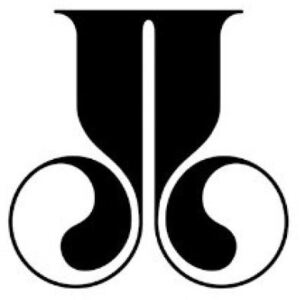

Trade Mark Journal No.2025/032 8 August 2025
WO0000001866058 (3,4,9,14,18,20,21,24,25,35)
Office of origin: Italy
Date of International Registration:28 February 2025
Date of designation in the UK:
28 February 2025

The mark consists of the letter J, mirrored, in special script.
International priority date claimed: 25 February 2025
(Italy)
(302025000032250)
- Class 3
- Eau de Cologne; scented water; toilet water; aromatics for fragrances; fragrances; perfumery; perfumes; beauty creams; deodorants and antiperspirants for personal use; foams for use in the shower, make-up preparations; hair care preparations; cosmetic preparations for baths; hair removal and shaving preparations; after-shave balms; shaving balms; after-shave emulsions; after-shave gel; shaving gel; shaving sets, comprised of shaving cream and aftershave; shaving foam; cleansing preparations for personal use; skin care preparations; air fragrancing preparations; sachets for perfuming linen; room fragrancing preparations; leather preservatives [polishes]; scented room sprays.
- Class 4
- Candles and wicks for lighting; illuminating wax; candle assemblies; fruit candles; candles for absorbing smoke; candles containing insect repellent; table candles; floating candles; candles; perfumed candles; aromatherapy fragrance candles; Christmas tree candles; firelighters; artificial fireplace logs; beeswax; lamp oil; lamp wicks; nightlights [candles]; wicks for lighting.
- Class 9
- Eyeglasses; sunglasses; frames for eyeglasses and sunglasses; optical lenses; contact lenses; cases for eyeglasses and sunglasses; chains for eyeglasses and sunglasses; optical apparatus and instruments; flip covers for smartphones; cases adapted for computers; cellular phone cases made of leather or imitations of leather; leather cases for smartphones; leather cases for tablet computers; cases for laptops; covers for cellular phones; protective covers for electronic book readers; covers for smartphones; protective cases for tablet computers; cases for telephones; covers for camcorders; flip covers for tablet computers; covers for tablet computers; cellular phone covers made of cloth or textile materials; tablet computers; mobile telephones; cell phone straps; hands-free headsets for cellular phones; headsets for cellular phones; wireless headsets for use with cellular phones; cases adapted for mobile telephones; flip covers for mobile phones; USB flash drives; USB chargers; electronic books; smartwatches; waterproof cases for smartphones; smartglasses; smartphones in the shape of a watch; wearable smartphones; smart wristbands; smartphones.
- Class 14
- Timepieces; watch bands; watch chains; chronographs [watches]; cases [fitted] for watches; buckles for watch bands; jewellery, clocks and watches; clocks for world time zones; wall clocks; wristwatches; pocket watches; jewelry watches; sports watches; jewellery being articles of precious stones; jewellery made of precious metals; jewellery made of semi-precious materials; personal jewellery; paste jewellery; precious and semi-precious gems; diamonds; silver; gold; precious metals and their alloys; jewellery findings; charms in precious metals or coated therewith [jewelry]; jewellery fashioned of cultured pearls; badges of precious metal; cufflinks; tie clips; clips of silver [jewellery]; precious jewels; cloisonné jewellery; jewellery fashioned from non-precious metals; precious stones and watches; pins [jewellery]; coins; ornaments, made of or coated with precious or semi-precious metals or stones, or imitations thereof; key rings [split rings with trinket or decorative fob]; key rings of precious metal; boxes of precious metal; statues and figurines, made of or coated with precious or semi-precious metals or stones, or imitations thereof; jewellery cases of precious metals; jewelry cases not of precious metal; presentation boxes for watches; cases [fitted] for clocks; jewellery boxes; key rings.
- Class 18
- Suitcases; sponge bags; travelling cases of leather; key cases; luggage; trunks [luggage]; vanity cases, not fitted; bags; evening handbags; bags for sports; bags of leather; bags of imitation leather; textile shopping bags; knitted bags; purses; handbags; duffel bags; leather cases; briefcases [leather goods]; credit card wallets; document holders [carrying cases]; pocket wallets; document cases of leather; coin purses; haversacks; suitcases with wheels; rucksacks; umbrellas; rainproof parasols; bags for umbrellas; walking stick seats; walking poles; mountaineering sticks; leather; leather cord; moleskin [imitation of leather]; animal hides; curried skins; shoulder straps.
- Class 20
- Photograph frames; picture frames; mirror frames; wall mirrors; mirrors [furniture]; printed mirrors; slatted indoor blinds; bamboo blinds; indoor window blinds [furniture]; indoor blinds [roller]; bead curtains for decoration; clothes racks [furniture]; hat stands; coat hangers; valet stands; yellow amber; bamboo, unworked or semi-worked; reeds [plaiting materials]; coral; wicker; chests, not of metal; containers made of bamboo; boxes of wood; storage drawers [furniture]; hampers [baskets]; storage baskets [furniture]; caskets; ornamental sculptures made of wax; ornamental sculptures made of plaster; ornamental sculptures made of wood; wardrobe interior fitments; bathroom furniture; clothes hangers, clothes stands [furniture] and clothes hooks; cupboards; metal cabinets [furniture]; trolleys [furniture]; dressing tables; console tables; nightstands; credenzas [furniture]; zabuton [Japanese floor cushions]; divans; space dividers [furniture]; futons [furniture]; wardrobes; cabinet work; furniture; bookcases; beds, bedding, mattresses, pillows and cushions; garden furniture; pouffes; benches [furniture]; umbrella stands; screens [furniture]; screens for fireplaces [furniture]; tie racks; armchairs; footstools; bottle racks; bean bags; racks [furniture]; shoe cabinets; lap desks; chairs [seats]; mirrors [looking glasses]; stools; mirror stands; book rests [furniture]; plate racks [furniture]; occasional tables; cushions; scented pillows; accent pillows.
- Class 21
- Meal trays; cabarets [trays]; zen [Japanese-style personal dining trays or stands]; table plates; glass dishes; collector plates; dishes; saucers of precious metal; saucers, not of precious metal; cups; porcelain mugs; cups of precious metal; cups, not of precious metal; drinking glasses; champagne flutes; cocktail glasses; glasses, drinking vessels and barware; decanters; crystal [glassware]; works of art made of glass; hand cut crystal glassware; potpourri jars; potpourri dishes; perfume vaporizers; perfume atomizers, empty; perfume burners; cosmetic bags [fitted]; combs; toilet cases; cosmetic utensils; scent sprays [atomizers]; shaving brushes; shaving bowls; shaving brush stands; bowls of precious metal; jewelry dishes.
- Class 24
- Fabric; foulard [fabric]; linens; household linen; household textiles; wall hangings; curtain holders of textile material; draperies [thick drop curtains]; curtains of textile or plastic; kitchen towels; table linen of textile; table covers; fabric table runners; drink coasters of table linen; table runners, not of paper; terry linen; sofa blankets; throws; eiderdown covers; pillow shams; pillowcases; bedsheets; duvet covers; kitchen linen; beach towels; hooded towels; bath mitts; large bath towels; table napkins of textile; towels of textile; swaddle blankets.
- Class 25
- Clothing; casual wear; evening gowns; outerclothing for boys; outerclothing for babies; dressing gowns; bath robes; beach robes; rain suits; leisure wear; knitted baby shoes; bandanas [neckerchiefs]; babies' bibs of plastic; babies' bibs, not of paper; berets; caps with visors; underwear, underwear for babies; snap crotch shirts for infants and toddlers; footwear for men and women; footwear made of wood; shoes for children; infants' shoes; bootees (woollen baby shoes); stockings; socks for infants and toddlers; bathing trunks; breeches for wear; shirts; capelets; headwear; children's headgear; coats; layettes [clothing]; bathing suits; bathing suits for women; bathing suits for men; bathing suits for children; jackets [clothing]; heavy jackets; skirts; mittens; denim clothing; children's wear; clothing for babies; flip-flops [footwear]; denim pants; hosiery; underwear for babies; swim shorts; trousers; trousers for children; trousers for babies; beach cover-ups; overalls for infants and toddlers; sandals; baby sandals; shoes; infants' boots; boots; baby boots; t-shirt; short-sleeved or long-sleeved t-shirts; printed tee-shirts; one-piece clothing for infants and toddlers; romper suits; dresses for infants and toddlers; wooden shoes.
- Class 35
- Retail services, rendered also on-line, relating to eau de cologne, scented water, toilet water, aromatics for fragrances, fragrances, perfumery, perfumes, beauty creams, deodorants and antiperspirants for personal use, foams for use in the shower, make-up preparations, hair care preparations, cosmetic preparations for baths, hair removal and shaving preparations, after-shave balms, shaving balms, after-shave emulsions, after-shave gel, shaving gel, shaving sets, comprised of shaving cream and aftershave, shaving foam, cleansing preparations for personal use, skin care preparations, air fragrancing preparations, sachets for perfuming linen, room fragrancing preparations, leather preservatives [polishes], scented room sprays; retail services, rendered also on-line, relating to candles and wicks for lighting, illuminating wax, candle assemblies, fruit candles, candles for absorbing smoke, candles containing insect repellent, table candles, floating candles, candles, perfumed candles, aromatherapy fragrance candles, Christmas tree candles, firelighters, artificial fireplace logs, beeswax, lamp oil, lamp wicks, nightlights [candles], wicks for lighting, patio torches; retail services, rendered also on-line, relating to eyeglasses, sunglasses, frames for eyeglasses and sunglasses, optical lenses, contact lenses, cases for eyeglasses and sunglasses, chains for eyeglasses and sunglasses, optical apparatus and instruments, flip covers for smartphones, cases adapted for computers, cellular phone cases made of leather or imitations of leather, leather cases for smartphones, leather cases for tablet computers, cases for laptops, covers for cellular phones, protective covers for electronic book readers, covers for smartphones, protective cases for tablet computers, cases for telephones, covers for camcorders, flip covers for tablet computers, covers for tablet computers, cellular phone covers made of cloth or textile materials, tablet computers, mobile telephones, cell phone straps, hands-free headsets for cellular phones, headsets for cellular phones, wireless headsets for use with cellular phones, cases adapted for mobile telephones, flip covers for mobile phones, USB flash drives, USB chargers, electronic books, smartwatches, waterproof cases for smartphones, smartglasses, smartphones in the shape of a watch, wearable smartphones, smart wristbands, smartphones; retail services, rendered also on- line, relating to timepieces, watch bands, watch chains, chronographs [watches], cases [fitted] for watches, buckles for watch bands, jewellery, clocks and watches, clocks for world time zones, wall clocks, wristwatches, watches that communicate data to smartphones, pocket watches, jewelry watches, sports watches, jewellery being articles of precious stones, jewellery made of precious metals, jewellery made of semi-precious materials, personal jewellery, paste jewellery, precious and semi-precious gems, diamonds, sliver, gold, precious metals and their alloys, jewellery findings, charms in precious metals or coated therewith [jewelry], jewellery fashioned of cultured pearls, badges of precious metal, cuff links, tie clips, clips of silver [jewellery], precious jewels, cloisonne jewellery, jewellery fashioned from non-precious metals, jewelry dishes, precious stones and watches, pins [jewellery], coins, ornaments, made of or coated with precious or semi-precious metals or stones, or imitations thereof, key rings [split rings with trinket or decorative fob], key rings of precious metal, boxes of precious metal, statues and figurines, made of or coated with precious or semi-precious metals or stones, or imitations thereof, jewellery cases of precious metals, jewelry cases not of precious metal, presentation boxes for watches, cases [fitted] forelocks, jewellery boxes, key rings; retail services, rendered also on-line, relating to suitcases, sponge bags, travelling cases of leather, key cases, luggage, trunks [luggage], vanity cases, not fitted, bags, evening handbags, bags for sports, bags of leather, bags of imitation leather, textile shopping bags, knitted bags, purses, handbags, duffel bags, leather cases, briefcases [leather goods], document holders [carrying cases], pocket wallets, document cases of leather, coin purses, haversacks, suitcases with wheels, rucksacks, umbrellas, rainproof parasols, bags for umbrellas, walking stick seats, walking poles, mountaineering sticks, leather, leather cord, moleskin [imitation of leather], animal hides, curried skins, shoulder straps, key cases of leather or imitation leather, credit card wallets; retail services, rendered also on-line, relating to photograph frames, picture frames, minor frames, wall mirrors, mirrors [furniture], printed mirrors, slatted indoor blinds, bamboo blinds, indoor window blinds [furniture], indoor blinds [roller], bead curtains for decoration, clothes racks [furniture], hat stands, coat hangers, valet stands, yellow amber, bamboo, unworked or semi-worked, reeds [plaiting materials], coral, wicker, chests, not of metal, containers made of bamboo, boxes of wood, storage drawers [furniture], hampers [baskets], storage baskets [furniture], caskets, ornamental sculptures made of wax, ornamental sculptures made of plaster, ornamental sculptures made of wood, wardrobe interior fitments, bathroom fittings in the nature of furniture, clothes hangers, clothes stands [furniture] and clothes hooks, cupboards, metal cabinets [furniture], trolleys [furniture], dressing tables, frames, console tables, nightstands, credenzas [furniture], zabuton [Japanese floor cushions], divans, space dividers [furniture], futons [furniture], wardrobes, cabinet work, furniture, bookcases, beds, bedding, mattresses, pillows and cushions, garden furniture, pouffes, benches [furniture], umbrella stands, screens [furniture], screens for fireplaces [furniture], tie racks, armchairs, footstools, bottle racks, bean bags, racks [furniture], shoe cabinets, lap desks, chairs [seats], mirrors [looking glasses], stools, mirror stands, book rests [furniture], plate racks [furniture], occasional tables, cushions, scented pillows, accent pillows; retail services, rendered also on-line, relating to meal trays, cabarets [trays], zen [Japanese-style personal dining trays or stands], table plates, glass dishes, collector plates, dishes, saucers of precious metal, saucers, not of precious metal, cups, porcelain mugs, cups of precious metal, cups, not of precious metal, drinking glasses, champagne flutes, cocktail glasses, glasses, drinking vessels and barware, decanters, crystal [glassware], works of art made of glass, hand cut crystal glassware, potpourri jars, potpourri dishes, perfume vaporizers, perfume atomizers, empty, perfume burners, cosmetic bags [fitted], combs, toilet cases, cosmetic utensils, scent sprays [atomizers], shaving brushes, shaving bowls, shaving brush stands, bowls of precious metal; retail services, rendered also on-line, relating to fabric, foulard [fabric], linens, household linen, household textiles, wall hangings, curtain holders of textile material, draperies [thick drop curtains], curtains, kitchen towels, table linen of textile, table covers, fabric table runners, drink coasters of table linen, table runners, not of paper, terry linen, sofa blankets, throws, eiderdown covers, pillow shams, pillowcases, bedsheets, duvet covers, kitchen linen, beach towels, hooded towels, bath mitts, large bath towels, table napkins of textile, towels of textile, swaddle blankets; retail services, rendered also on-line, relating to clothing, casual wear, evening gowns, outerclothing for boys, outerclothing for babies, dressing gowns, bath robes, beach robes, rain suits, leisure wear, knitted baby shoes, bandanas [neckerchiefs], babies' bibs of plastic, babies' bibs, not of paper, berets, caps with visors, underwear, underwear for babies, snap crotch shirts for infants and toddlers, footwear for men and women, footwear made of wood, shoes for children, infants' shoes, bootees (woollen baby shoes), stockings, socks for infants and toddlers, bathing trunks, breeches for wear, shirts, capelets, headwear, children's headgear, coats, layettes [clothing], bathing suits, bathing suits for women, bathing suits for men, bathing suits for children, jackets [clothing], heavy jackets, skirts, mittens, denim clothing, children's wear, clothing for babies, flip-flops [footwear], denim pants, hosiery, underwear for babies, swim shorts, trousers, trousers for children, trousers for babies, beach cover-ups, overalls for infants and toddlers, sandals, baby sandals, shoes, infants' hoots, boots, baby boots, t-shirt, short-sleeved or long-sleeved t-shirts, printed tee-shirts, one-piece clothing for infants and toddlers, romper suits, dresses for infants and toddlers, wooden shoes; on-line trading services in which seller posts products to be auctioned and bidding is done via the Internet; electronic commerce services, namely, providing information about products via telecommunication networks for advertising and sales purposes; presentation of goods on communication media, for retail purposes; merchandise display services; window dressing services for advertising purposes; business merchandising display services; organization of exhibitions for commercial or advertising purposes; arranging of exhibitions for business purposes; organization of events, exhibitions, fairs and shows for commercial, promotional and advertising purposes; management of customer loyalty, incentive or promotional schemes; organization, operation and supervision of loyalty and incentive schemes; loyalty scheme services; provision of computerised advertising services; provision of advertising space by electronic means and global information networks; rental of advertising space on the Internet; arranging for the provision of advertising space in newspapers; dissemination of advertising matter; advertising and marketing consultancy; advisory services relating to corporate identity; business advice relating to marketing; consultancy relating to advertising; marketing advisory services; advisory services relating to publicity for franchisees; analysis relating to marketing; conducting marketing studies; marketing research; corporate image studies; advertising research; business administration services for the processing of sales made on the Internet; demonstration of goods; sales promotion for others; provision of an on-line marketplace for buyers and sellers of goods and services; procurement services for others [purchasing goods and services for other businesses].
DOUBLEJ S.r.l.
Representative: Barzanò & Zanardo S.p.A., Via Borgonuovo 10, I-20121 Milano, ITALY